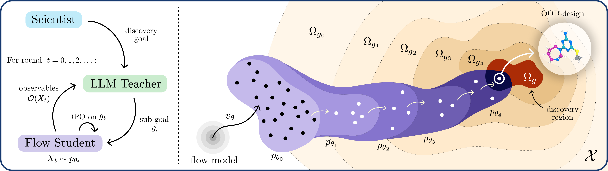
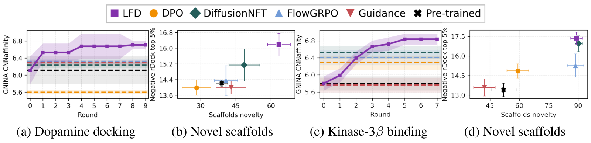
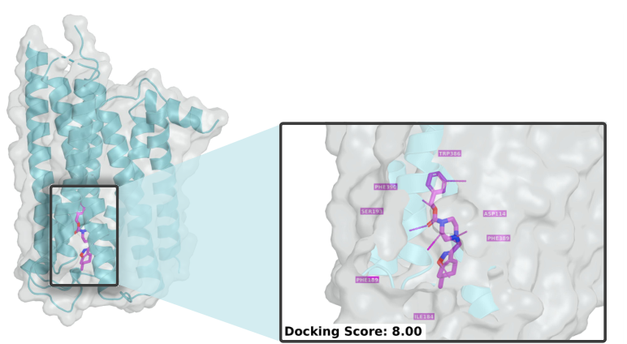
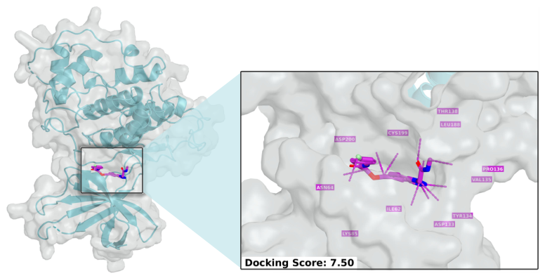

Make the goal reachable
Start with an intermediate objective that distinguishes among what the current generator can produce.
g → g0 → g1 → … → g
Teaching natural language goals
to scientific generators.
Let language describe the discovery.
Let a scientific generator learn how to reach it.
Generate promising
drug-like molecules.
LLMs carry broad scientific knowledge. Domain-specific flow and diffusion models know how to generate structured designs. LFD connects these complementary capabilities through an adaptive curriculum.
A frozen LLM teacher chooses an attainable subgoal and judges the student’s samples. Those judgments become preferences for Direct Preference Optimization. As the generator improves, the teacher moves the goal closer to the original discovery objective.
Method in the paperStart with an intermediate objective that distinguishes among what the current generator can produce.
Positive and negative judgments form preference pairs. Abstentions leave uncertain candidates out of the update.
DPO transfers the teacher’s feedback into the flow student. New samples inform the next curriculum step.

Choose a task, follow its subgoals, and inspect recorded teacher judgments and their uncertainties.
The explorer follows the reported trajectories. High-level summaries are labeled; source records and paper references accompany the evidence.
Teacher judgments are model assessments. The reported activity and docking evaluations are computational; experimental efficacy, safety, and binding remain unverified.
Across four evaluated discovery tasks, LFD has the highest reported mean on the primary activity or docking measures in Tables 1–2, without using the task-specific proxy rewards available to the baselines.
Explore every metric below, including hemolysis and distance from the prior.
Values and ± terms are transcribed from the supplied preprint. They are not a new analysis or a claim of independently replicated training. See the paper for evaluation and checkpoint-selection details.



For the constrained molecular task, the paper reports no hits in 38,500 pretrained samples and a goal-satisfying design in a 512-sample batch at round 6. This is a reported discovery example, not a replicated success-rate estimate.
Inspect the structural-goal exampleThese experiments use in silico evaluations. LLM explanations are hypotheses, and held-out predictors or docking functions remain imperfect proxies for real-world outcomes. Some reported peptide checkpoints were chosen through exploratory continuations; the task-specific evidence panels preserve those selection details. CPP comparisons use one training seed and unequal optimization budgets, and the reward and evaluator share historical labels. Integrating experimental feedback is future work.
@misc{desanti2026llmtoflow,
title = {LLM-to-Flow Distillation: Teaching Natural Language
Goals to Scientific Generators},
author = {De Santi, Riccardo and Di Gennaro, Federico and
Gnazzo, Angelo and Tang, Sophia and Chatterjee, Pranam and
Yang, Fanny and Ceylan, {İsmail İlkan} and
Bronstein, Michael and Krause, Andreas},
year = {2026},
note = {Preprint},
url = {https://llm-to-flow-distillation.github.io/}
}Preprint citation. No arXiv identifier was included in the supplied PDF.